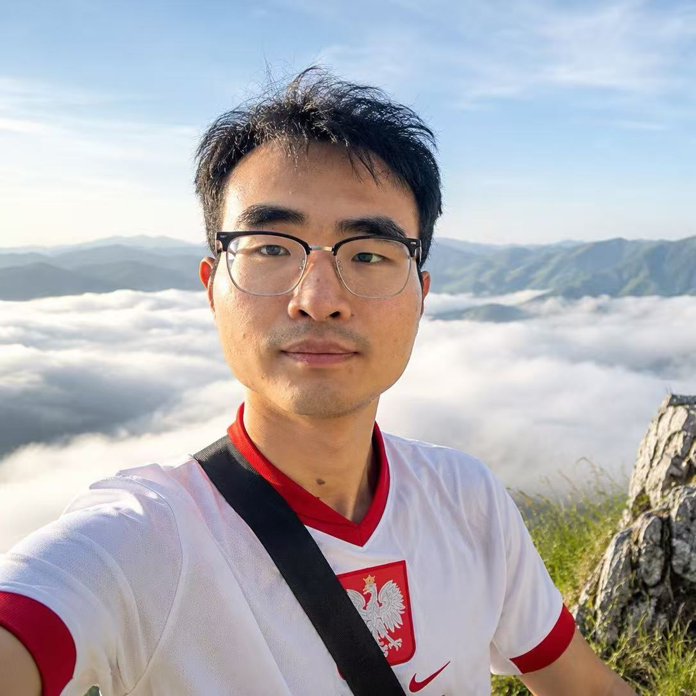

Kaicheng
Dong.
Arithmetic and Diophantine geometry, Arakelov geometry, and non-Archimedean geometry.

About me
I am Kaicheng Dong (董开承), a non-degree visiting student at Peking University in 2026–2027, hosted by Professor Xinyi Yuan. I completed the ALGANT Master's Programme in Mathematics in 2026, studying at the University of Regensburg (2024–2025) and the University of Bordeaux (2025–2026). My master's thesis was supervised by Professor Pascal Autissier.
Previously, I received a bachelor's degree in Mathematics and Applied Mathematics from Southern University of Science and Technology (SUSTech), where I joined the Mathematics Honors Programme.
Research
My research interests are in arithmetic and Diophantine geometry, especially Arakelov geometry, adelic line bundles and height theory, arithmetic intersection theory, and positivity. I am also interested in non-Archimedean and Berkovich geometry, the geometry and degeneration of curves and abelian varieties, equidistribution, and Bogomolov-type questions.
Papers & thesis
- One complex metric and geometric adelic nefness (Single-author preprint, 6 November 2026)Complex semipositivity, geometric adelic nefness, and an application to Gross–Schoen line bundles.PDF · LaTeX · AI-assisted development records
- Admissible Pairing and Effective Bogomolov Results (ALGANT master's thesis, 2026; supervisor: Pascal Autissier)Admissible metrics on curves, local Néron symbols, metrized graphs and adelic height inequalities.
AI and Math
I use AI to explore mathematical questions, develop theory, and improve exposition. This section brings together my manifesto, three freely downloadable agents, and open research projects.
Explore AI and Math →